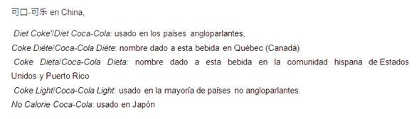

Hoy en día la Coca Cola ha logrado calar muy a fondo ya que es consumida por millones de personas en todo el globo terráqueo por día, y es el producto más distribuido en el mundo accesible en más de 205 países, teniendo en cuenta la expresión americana más típica. " okey, coca cola" y actualmente cuenta diferentes traducciones como son:
Y muchos más que actualmente están siendo comercializados para beneficio de la población, y con millones de gastos anuales en publicidad, es ahora una marca de prestigio y con un largo camino por mantener la marca de tanta competencia que ahora está ahí haciéndole la Guerra a la Cola Cola, Pues se podría decir que para esta compañía no existe límites y seguirán luchando por dejar bien en claro quien es la pionera en gaseosas del mundo.
Como podemos ver la coca cola ha logrado expandirse por muchos países tanto del habla hispana como de Europa, incluso en países que jamás se pensó que esta marca americana podía entrar por razones políticas pero que el tiempo demostró lo contrario y más aún en países en momentos de Guerra dando un giro a esta producto y es por eso que la ha hecho que gane un nombre más fuerte en todo el mundo ya que no hay bebida en el mundo que pueda compararse con esta y pueda o tenga el dinero suficiente para poder invertir la cantidad de dinero suficiente que la coca cola en su tiempo gastó y que aún sigue gastando para mantener su posición y permanencia en el mercado porque como se sabe en el mundo hay muchas marcas de bebidas que han resurgido en estos últimos tiempos dando una cara distinta a la coca cola y otras por ahí que desean o tratan de mostrar que son tanto de iguales o mejores que la coca cola, reconociendo estas su fuerte competidor.
Las competencias no se hicieron esperar y estuvieron a la orden del día, algunas jugando con trampa y no cometían como debería ser, tratando de denigrar o manchar a la coca cola porque estas eran conscientes del poder que tenía la coca cola para poder derrotarlas y que no la tenía fácil, por eso existieron muchas demandas con el pasar del tiempo en contra de estas competencias sucias. Otro tipo de competencia fue que algunas bebidas trataron de imitar en los envases o incluso en la misma publicidad con el fin de confundir al consumidor y hacerlo creer que las bebida eran las mismas y vaya que varios fueron víctimas de esas mentiras o estafas que se propagaron por mucho tiempo. Tal es el caso de Perú, cuando entro en debate la bebida Gatorade, muy conocida por sus componentes rehidratantes para los deportistas y además contaba con una aprobación de varias instituciones mundiales de la salud, como se sabe esta bebida es de la coca cola , por mucho tiempo esta bebida se mantuvo entre la más consumida en deportistas de todas las categorías por su alto rendimiento energético con rápido efecto,
Por tal acogida que llego a tener GATORADE, la empresa peruana AJE de una manera un poco engañosa trató de desviara la mente de consumidor peruano, donde esta última creó una nueva bebida muy parecida al Gatorade, con su mismo envase e incluso presentación y sabor, y sí que convenció y persuadió a una fuerte masa de público al imponer esta nueva bebida llamada SPORADE, era la misma o casi igual que el Gatorade, donde se pudo saber que esto llegó hasta los tribunales.
Y no solo esta compañía peruana trato de imitar esta bebida, sino también lo realizo en su tiempo con la misma gaseosa coca cola y con todas sus presentaciones de la coca cola con un afán lucrativo de llegar a posesionarse como de lugar sin que ellos pudieran crear sus propias bebidas, sino que se sostuvieron de bebidas ya reconocidas para solo darles un pequeño cambio y así poder llegar más rápido al cliente y con este problema en Perú, también lo fueron otras marcas en otros países con cuestiones más fuertes pero como ya conocemos siempre existe este tiempo de competencia. En conclusión la coca cola en nuestros días está cada vez más arriba que cualquier otra bebida en el mundo, innovando presentaciones, segmentando masas y manteniéndose en el mercado con publicidad y lo más importante a un precio accesible al público de cada país.